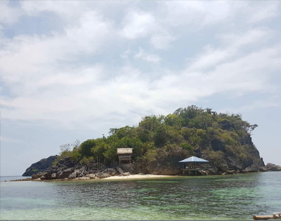
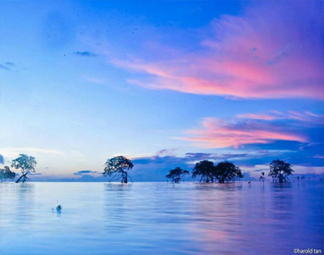
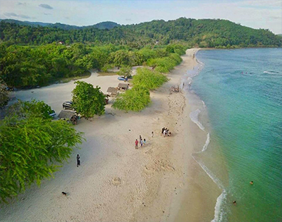
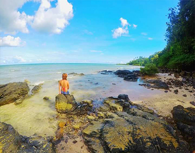

Ganda sa Mansalay

"Buyayao Island"
This untouched islands are very calming for stressed people who wants to have a break from the busy city life.
The locals are very accomodating for your needs despite the lack of resources since it has not been fully developed.
They have very cheap fresh coconit juices and cottages you can stay at while having your swim in their white sand beach.
It's a bit messy due to lack of development but that's what makes it beautiful . Not crowded. No pollution. All nature.

"Palaypay Fish Sanctuary"
Located at Mansalay, Oriental Mindoro. Fish sanctuary and a sacred historical place.
The place is the safe haven of the remains of the early people who lives in the town.
Tara na sa bayan ng Mansalay.

"Buktot White Sand Beach"
Located at Sitio Wawan, Brgy. Manaul, Mansalay, Oriental Mindoro.
The very well know beach in the town of Mansalay. Ten pesos( P10) lang entrance dito guys.

"cabalwa"
Must see destination in the Province of Oriental Mindoro.
Sidell beach resort Located at Brgy. Cabalwa, Mansalay, Oriental Mindoro
|